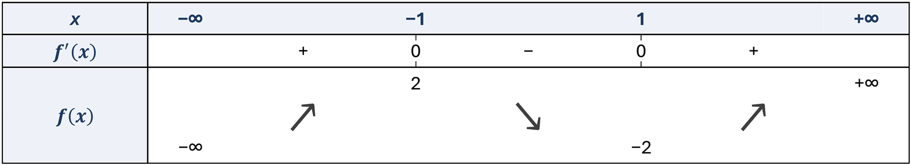
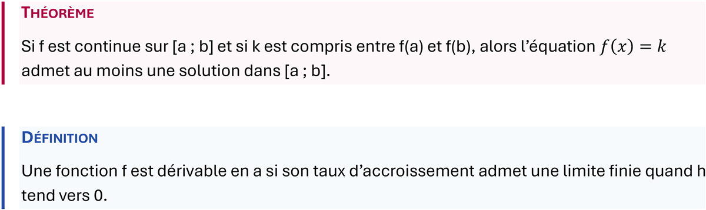

Toutes les formules du lycée et au-delà
Fractions, puissances, racines, sommes, intégrales, limites, matrices, systèmes, symboles et lettres grecques. Fonctions en français, anglais, allemand et espagnol.
Dans Word, écrivez x2 + 1/2 comme ça vient : MathCursor vous propose la formule en direct, vous validez d'une touche. Pour les profs qui préparent leurs cours et les élèves qui prennent leurs notes au clavier.
Windows 10 et 11 · Word 2016 et suivants, Microsoft 365
Pas de menus, pas de codes à retenir : la notation que vous écririez au brouillon suffit.
x2 + 1/2rac 3 / 2somme k 1 n k2f(x) = 1/x+12H2 + O2 -> 2H2OLe résultat est une vraie équation Word : modifiable, imprimable, lisible sur n'importe quel ordinateur, même sans MathCursor.
Dans votre phrase, au rythme du cours. MathCursor repère les passages mathématiques.
La formule se dessine en direct sous le curseur. S'il y a deux lectures possibles, vous choisissez.
Une touche, et la formule se fige dans le document. Pas la bonne ? Ctrl+Z et vous retapez.
↓ puis Entrée pour valider · Ctrl+Espace pour convertir à la demande · Échap pour mettre la détection en pause dans un document
Fractions, puissances, racines, sommes, intégrales, limites, matrices, systèmes, symboles et lettres grecques. Fonctions en français, anglais, allemand et espagnol.

Un bouton dans le ruban, puis tout se remplit au clavier : tapez une valeur de x entre deux autres, la colonne s'ajoute. Flèches, zéros et valeurs interdites se posent d'un clic.
Un mode activable document par document : formules, ions, équations de réaction et grandeurs s'écrivent comme en cours, sans toucher à vos documents de maths.

Encadrés Théorème, Définition, Exemple et Propriété, mise en page en colonnes, police des équations au choix (Cambria Math, Latin Modern, STIX).
Chapitre 3 - Dérivation
Définition : soit f une fonction définie sur un intervalle I et a dans I. On dit que f est dérivable en a si le taux d'accroissement (f(a+h) - f(a))/h admet une limite finie quand h tend vers 0. Cette limite est notée f'(a).
Propriété : la fonction carré est dérivable sur R et, pour tout réel x, (x2)'=2x.
Démonstration : soit a dans R et h!=0 :
((a+h)2 - a2)/h = (2ah + h2)/h = 2a + h
qui tend vers 2a quand h tend vers 0. Donc la fonction carré est dérivable en a et f'(a)=2a.
Exemple : soit f(x)=x2-4x+3 sur R. Alors f'(x)=2x-4, qui s'annule en x = 2, et f(2)=-1.
On en déduit le tableau de variation de f :
x : -inf 2 +inf
f'(x) : - 0 +
f(x) : +inf descend -1 monte +inf
Théorème : si f est continue sur [a ; b] et si k est compris entre f(a) et f(b), alors l'équation f(x)=k admet au moins une solution dans [a ; b].

MathCursor est gratuit, et c'est un logiciel libre (licence GNU GPL v3).
Aucune inscription, aucun cloud : on installe et on écrit.
La frappe et les documents ne quittent pas l'ordinateur. Seul un compteur anonyme (le nombre de formules converties) est envoyé, et il se désactive dans les Paramètres. Détails
Le résultat est l'équation native de Word : rien à installer pour la lire, l'imprimer ou l'exporter en PDF.
MathCursor met en forme ce que l'on écrit. Il ne résout pas d'exercice et ne propose pas de réponse.
Échap met la détection en pause dans un document, par exemple pour un devoir d'une autre matière ; Ctrl+Espace la relance.
x2+1/2, la popup vous propose la formule.Non. Elle n'apparaît que sur les passages que MathCursor reconnaît comme des maths. Sur du texte ordinaire, rien ne se passe. Si elle gêne, continuez simplement à taper ; Échap la ferme et met la détection en pause dans ce document, Ctrl+Espace la relance.
Oui. Les formules sont des équations Word standard : elles s'ouvrent, s'impriment et s'exportent en PDF sur n'importe quel ordinateur, sans MathCursor.
Vos documents et votre frappe ne quittent jamais l'ordinateur. La seule donnée envoyée automatiquement est un compteur anonyme : le nombre de formules converties, un simple nombre, sans contenu ni identifiant, désactivable dans les Paramètres. Pas de compte, pas de cloud, pas de cookie. Détails sur la page Confidentialité.
Oui. Une connexion ne sert qu'à signaler une nouvelle version : un badge « Mise à jour disponible » apparaît alors dans le ruban, le téléchargement reste manuel.
Word 2016, 2019, 2021 et Microsoft 365 sur Windows 10 et 11. Mac, Word en ligne et iPad sont prévus dans un second temps.
LibreOffice et VS Code (LaTeX) existent en alpha, avec le même moteur et la même popup. Téléchargements et marche à suivre sur la page Installation.
Oui. Il est importé dans votre compte utilisateur uniquement, sans droits administrateur, et peut être retiré à tout moment via certmgr.msc. Le script d'import est consultable.
Par le formulaire de contact, ou par le bouton « Signaler un souci » du ruban Word. Les retours des profs et des élèves décident de la suite.
La démo en ligne utilise le même moteur que l'add-in Word.